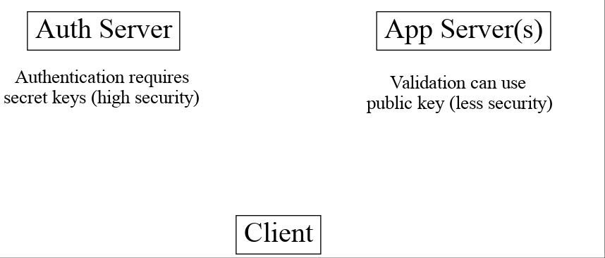
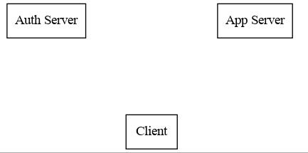
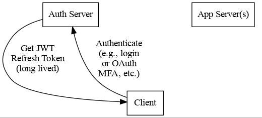
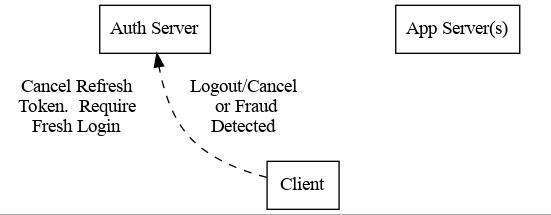
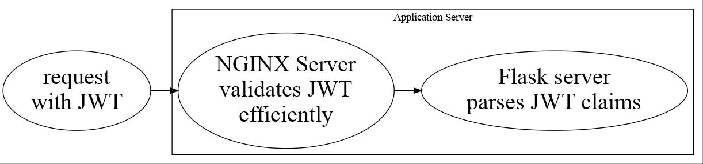

Tips, Tricks, and Reasons for JSON Web Tokens (JWTs)
Emin Martinian
JWT: JSON Web Token
Used for authentication/authorization such as:
- front-end client to access back-end or API server
- compact, standardized, secured, customizable
- "state-less" alternative to cookies/sessions
- slides/examples: https://github.com/aocks/ox_jwt
Why JWTs?
Imagine app with many features + servers + engineers:
- Load balance, payments, profiles, PII, DB
- Local/remote/international workers + consultants
- How to manage security?
- Can't give everyone access to sensitive info
JWT Architecture
Separate authentication from validation/application:
- Authentication requires secret keys (high security)
- Validation can use public key (less security)
- Easier to manage secrets, keys, load, sync, etc.

JWT: Authentication Request
Client authenticates to server:
- Auth server must be secure
- Payment or Login with username/password/MFA
- May require database check, locks, other slow ops
JWT: Authentication Response
Server responds with JWT:
- header describing JWT
- claims describing info/rights (iat, nbf, exp, etc.)
- signature from Auth Server

JWT: Application Request
Client sends JWT to App Server:
- App Server validates JWT with public key
- No DB/state/sync/update; can be serverless
- Checks JWT for rights + provides service

Separate Auth From Validation
Auth Server has secrets; needs security + maintenance
- App Server(s) needs public keys; low security
- Easy to deploy App Server(s); e.g., serverless
- Lower security for App Server(s), logs, debug, etc.

What do JWTs look like?
Base64 encoded header.payload.signature:
HEADER: { "alg": "EdDSA", "typ": "JWT" }
PAYLOAD: {"sub": "a", "name": "arbitrary data", "iat": 1 }
SIGNATURE: SU6aXJ0YbH7Vg1jROpQfvnhn98Rt9zBeS7-c5O9jH-L
L5mQqMMFq61eZjf0tLLqExm-dckRUNa3-qT7R2SKmCw
ENCODED JWT: eyJhbGciOiJFZERTQSIsInR5cCI6IkpXVCJ9
.eyJzdWIiOiJhIiwibmFtZSI6ImIiLCJpYXQiOjF9
.SU6aXJ0YbH7Vg1jROpQfvnhn98Rt9zBeS7-c5O9jH-L
L5mQqMMFq61eZjf0tLLqExm-dckRUNa3-qT7R2SKmCw
Signed using EdDSA with secret key:
MC4CAQAwBQYDK2VwBCIEIC+D6rD2YbXtV0ccR3smoR0ynhVuyyqvplFLbQWDdAtn
Secret Key
import base64, jwt # pip install 'pyjwt[crypto]'
from cryptography.hazmat.primitives.asymmetric import ed25519
from cryptography.hazmat.primitives import serialization
from cryptography.hazmat.backends import default_backend
secret_key = base64.b64encode( # How to generate new key
ed25519.Ed25519PrivateKey.generate().private_bytes(
encoding=serialization.Encoding.DER,
format=serialization.PrivateFormat.PKCS8,
encryption_algorithm=serialization.NoEncryption())
).decode('utf8')
secret_key = ( # We hard code secret key so you can verify results
'MC4CAQAwBQYDK2VwBCIEIC+D6rD2YbXtV0ccR3smoR0ynhVuyyqvplFLbQWDdAtn'
)
Public Key
sk = serialization.load_der_private_key( # de-serialize encoded key
base64.b64decode(secret_key),backend=default_backend(),
password=None)
pk = sk.public_key()
public_key = pk.public_bytes( # serialize
encoding=serialization.Encoding.PEM,
format=serialization.PublicFormat.SubjectPublicKeyInfo
).decode('utf8')
print(public_key)
-----BEGIN PUBLIC KEY----- MCowBQYDK2VwAyEAUVLjZWAVK5ZE1ewI5QBdr0Nig1Qkx3kl5zHIADvw0M8= -----END PUBLIC KEY-----
Encoding Example JWT
import textwrap # just for display
example_jwt = jwt.encode(
headers={'typ':'JWT', 'alg':'EdDSA'},
payload={'sub': 'a', 'name': 'b', 'iat': 1},
key=sk) # this is the JWT that would be used
print(textwrap.indent(textwrap.fill( # format for
'\n.'.join(example_jwt.split('.')), # nice display
width=44, replace_whitespace=False), prefix=' '))
Encoded JWT:
eyJhbGciOiJFZERTQSIsInR5cCI6IkpXVCJ9 .eyJzdWIiOiJhIiwibmFtZSI6ImIiLCJpYXQiOjF9 .SU6aXJ0YbH7Vg1jROpQfvnhn98Rt9zBeS7-c5O9jH- LL5mQqMMFq61eZjf0tLLqExm-dckRUNa3-qT7R2SKmCw
Decoding Example JWT
decoded_jwt = jwt.decode(example_jwt, algorithms=['EdDSA'], key=pk)
print(decoded_jwt)
Decoded Payload from JWT:
{'sub': 'a', 'name': 'b', 'iat': 1}
Main JWT Fields
- sub: Subject (username, email, etc.)
- iat: Issued at (useful for checking freshness)
- exp: Expiry (useful for managing life-cycle )
- nbf: Not before (useful for managing life-cycle )
Python/Flask Example
Easy to verify/decode using libraries (e.g., pyjwt) and compose
checks using decorators:
@app.route('/support/urgent')
@requires_jwt # validates JWT
@jwt_claims(['paid_support']) # ensures token is for premium user
@jwt_iat(datetime.timedelta(hours=24)) # ensure recent token
def support_urgent():
... # process ending support request
Starting Flask
import os
import sys
import subprocess
os.chdir(os.path.expanduser('~/code/ox_jwt/src/ox_jwt'))
my_env = os.environ.copy()
my_env['FLASK_JWT_KEY'] = public_key.split('\n')[1]
my_env['FLASK_JWT_ALGS'] = 'EdDSA,ES256'
proc = subprocess.Popen([sys.executable, 'app.py'], env=my_env)
# Use proc.kill() to shutdown server
Example of @requires_jwt
def requires_jwt(func):
@wraps(func)
def decorated(*args, **kwargs):
token = request.headers.get("Authorization").split(" ")[1]
if not token:
return 'missing token', 401 # if no token return error
try:
g.decoded_jwt = jwt.decode(
token, algorithms=['EdDSA'],
key=current_app.config['JWT_KEY']) # public key
return func(*args, **kwargs)
except Exception as problem:
return f'{problem=}', 401 # return 401 or other error code
return decorated
Ensure Valid Token
import requests
req = requests.get('http://127.0.0.1:5000/hello', headers={
'Authorization': f'Bearer {example_jwt}mybad'}) # bad token
print(f'Bad token response:\n code: {req.status_code}\n'
f' text: {req.text}\n')
req = requests.get('http://127.0.0.1:5000/hello', headers={
'Authorization': f'Bearer {example_jwt}'})
print(f'Good token response:\n code: {req.status_code}\n'
f' text: {req.text}\n')
Bad token response:
code: 401
text: problem=InvalidSignatureError('Signature verification failed')
Good token response:
code: 200
text: Hello World!
Example of @jwt_claims
def jwt_claims(claims_list: typing.Sequence[str]):
def make_decorator(func):
@wraps(func)
def decorated(*args, **kwargs):
missing = [c for c in claims_list
if not g.decoded_jwt.get(c)]
if missing:
return f'Missing claims: {missing}', 401
return func(*args, **kwargs)
return decorated
return make_decorator
Ensure Claims (Bad Token)
import datetime, requests
req = requests.get('http://127.0.0.1:5000/support/urgent', headers={
'Authorization': f'Bearer {example_jwt}'}) # bad token
print(f'Bad token response:\n code: {req.status_code}\n'
f' text: {req.text}\n')
Bad token response: code: 401 text: Missing claims: ['premium_user']
Ensure Claims (Bad Claims)
premium_jwt = jwt.encode(headers={'typ':'JWT', 'alg':'EdDSA'},
payload={'sub': 'a', 'premium_user': 'b', 'iat': 1}, key=sk)
req = requests.get('http://127.0.0.1:5000/support/urgent', headers={
'Authorization': f'Bearer {premium_jwt}'})
print(f'Premium token response:\n code: {req.status_code}\n'
f' text: {req.text}\n')
Premium token response: code: 401 text: Token age 20193 days, 17:37:05.670865 not within 0:00:30
Ensure Claims (Success)
now = datetime.datetime.now(tz=datetime.timezone.utc).timestamp()
recent_premium_jwt = jwt.encode(headers={'typ':'JWT', 'alg':'EdDSA'},
payload={'sub': 'a', 'premium_user': 'b', 'iat': int(now)}, key=sk)
req = requests.get('http://127.0.0.1:5000/support/urgent', headers={
'Authorization': f'Bearer {recent_premium_jwt}'})
print(f'Recent premium token response:\n code: {req.status_code}\n'
f' text: {req.text}\n')
Recent premium token response: code: 200 text: processing support request for user b
Example Use Case: Proxy
- Auth Server grants JWT letting Alice to act for Bob
- claims:
{"sub": "Alice", "proxy": "Bob"} - Alice sends request combining to act for Bob
Example Use Case: Proxy
- Auth Server grants JWT letting Alice to act for Bob
- claims:
{"sub": "Alice", "proxy": "Bob"} - Alice sends request combining to act for Bob
@APP.route("/issue")
@requires_jwt
def issue():
"Example route to create an issue."
user = g.decoded_jwt.get('proxy', g.decoded_jwt.get('sub'))
msg = f'Created issue assigned to {user}.'
# ... Create the actual issue here
return msg
Example Use Case: Proxy
- Auth Server grants JWT letting Alice to act for Bob
- claims:
{"sub": "Alice", "proxy": "Bob"} - Alice sends request combining to act for Bob
@APP.route("/issue")
@requires_jwt
def issue():
"Example route to create an issue."
user = g.decoded_jwt.get('proxy', g.decoded_jwt.get('sub'))
msg = f'Created issue assigned to {user}.'
# ... Create the actual issue here
real_user = g.decoded_jwt['sub']
if real_user != user:
msg += f'\n{real_user} acted on behalf of {user}'
return msg
Python demo
now = datetime.datetime.now(tz=datetime.timezone.utc).timestamp()
proxy_example_jwt = jwt.encode(headers={'typ':'JWT', 'alg':'EdDSA'},
payload={'sub': 'Alice', 'proxy': 'Bob'}, key=sk)
req = requests.get('http://127.0.0.1:5000/issue', headers={
'Authorization': f'Bearer {proxy_example_jwt}'})
print(req.text)
127.0.0.1 - - [24/Apr/2025 13:25:28] "GET /issue HTTP/1.1" 200 - Created issue assigned to Bob. Alice acted on behalf of Bob
Anti-Patterns
- Beware using header fields to check signature
- don't trust
algfield or limit possibilities- e.g.,
algorithms=['EdDSA']
- e.g.,
- be careful with
kid,jku,jwk, etc.
- don't trust
- Don't simulate sessions with JWTs
- Token revocation issue: access/refresh tokens
Revocation via Access/Refresh
- Problem: Can't cancel or logout a JWT
- Solution: Refresh/Access token
- "refresh token" with long expiry
- used to get access token w/o credential check
- "access token" with short expiry
- can be used to access services
Get Refresh Token

Get Access Token

Use Access Token
Revocation

Separate validation from parsing
- Can use middleware to verify signature
e.g., NGINX can verify before passing to app server

- See implementation in
nginxdirectory: - https://github.com/aocks/ox_jwt (example.conf)
Summary and next steps
- Distributed trust can enable many use cases
- JWTs = secure, efficient, standardized auth tool
- Python decorators = nice way to validate claims
- Libraries:
- Platforms:
- Slides/examples: https://github.com/aocks/ox_jwt/